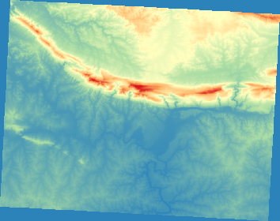
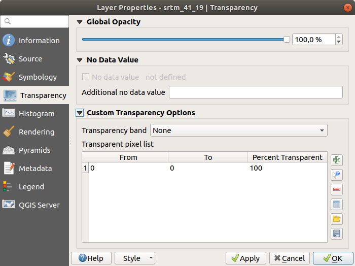

Not all raster data are aerial photos.
There are many other forms of raster data, and in many of those cases,
it is essential to symbolize the them so that they becomes properly
visible and useful.
The goal for this lesson: To change the symbology for a raster
layer.
Use the Browser Panel to load srtm_41_19.tif,
found under exercise_data/raster/SRTM/
Zoom to the extent of this layer by right-clicking on it in the
Layers panel and selecting Zoom to Layer.
This dataset is a Digital Elevation Model (DEM).
It is a map of the elevation (altitude) of the terrain, allowing us to
see where the mountains and valleys are, for example.
While each pixel of the dataset of the previous section contained
color information, in a DEM, each pixel contains elevation values.
Once the DEM is loaded, you will notice that it is a grayscale
representation:
QGIS has automatically applied a stretch to the pixel values of the
image for visualization purposes, and we will learn more about how
this works as we continue.
You have two different options to change the raster symbology:
Within the Layer Properties dialog, by right-clicking
on the layer in the Layer tree and selecting the
Properties option.
Then switch to the Symbology tab
By clicking on the Open the Layer Styling panel
button right above the Layers panel (shortcut
F7).
This will open the Layer Styling panel, where you can
switch to the Symbology tab.
When you load a raster file, if it is not a photo image like the ones
of the previous section, the default style is set to a grayscale
gradient.
Let’s explore some of the features of this renderer.
The default Color gradient is set to Blacktowhite,
meaning that low pixel values are black and while high values are
white.
Try to invert this setting to Whitetoblack and see the results.
Very important is the Contrast enhancement parameter: by
default it is set to StretchtoMinMax meaning that the pixel
values are stretched to the minimum and maximum values.
Look at the difference with the enhancement (left) and without (right):
But what are the minimum and maximum values that should be used for
the stretch?
The ones that are currently under
Min / Max Value Settings.
There are many ways to calculate the minimum and maximum values and
use them for the stretch:
User Defined: you enter the Min and Max
values manually
Cumulative count cut: this is useful when you have some extreme
low or high values. It cuts the 2% (or the value you choose)
of these values
Min / max: the Real or Estimated minimum and maximum values
of the raster
Mean +/- standard deviation: the values will be calculated
according to the mean value and the standard deviation
Grayscales are not always great styles for raster layers.
Let’s try to make the DEM more colorful.
Change the Render type to
Singleband pseudocolor.
If you don’t like the default colors loaded, select another
Color ramp
Click the Classify button to generate a new color
classification
If it is not generated automatically click on the OK
button to apply this classification to the DEM
You’ll see the raster looking like this:

This is an interesting way of looking at the DEM.
You will now see that the values of the raster are again properly
displayed, going from blue for the lower areas to red for the higher
ones.
Sometimes changing the transparency of the whole raster layer can help
you to see other layers covered by the raster itself and better
understand the study area.
To change the transparency of the whole raster switch to the
Transparency tab and use the slider of the
Global Opacity to lower the opacity:
More interesting is changing the transparency for some pixel values.
For example in the raster we used you can see a homogeneous color at
the corners.
To set these pixels as transparent, go to
Custom Transparency Options in the
Transparency tab.
By clicking on the Add values manually button,
you can add a range of values and set their transparency percentage
For single values the Add values from display
button is more useful
Click on the Add values from display button.
The dialog disappears, and you can interact with the map.
Click on the homogeneous color in a corner of the DEM
You will see that the transparency table will be filled with the
clicked values:

Click on OK to close the dialog and see the changes.
These are some the basic functions to get you started with raster
symbology.
QGIS also gives you many other options, such as symbolizing a layer
using paletted/unique values, representing different bands with
different colors in a multispectral image, or making an automatic
hillshade effect (useful only with DEM raster files).

 Open the Layer Styling panel
button right above the Layers panel (shortcut
F7).
This will open the Layer Styling panel, where you can
switch to the
Open the Layer Styling panel
button right above the Layers panel (shortcut
F7).
This will open the Layer Styling panel, where you can
switch to the 


 Add values manually button,
you can add a range of values and set their transparency percentage
Add values manually button,
you can add a range of values and set their transparency percentage Add values from display
button is more useful
Add values from display
button is more useful